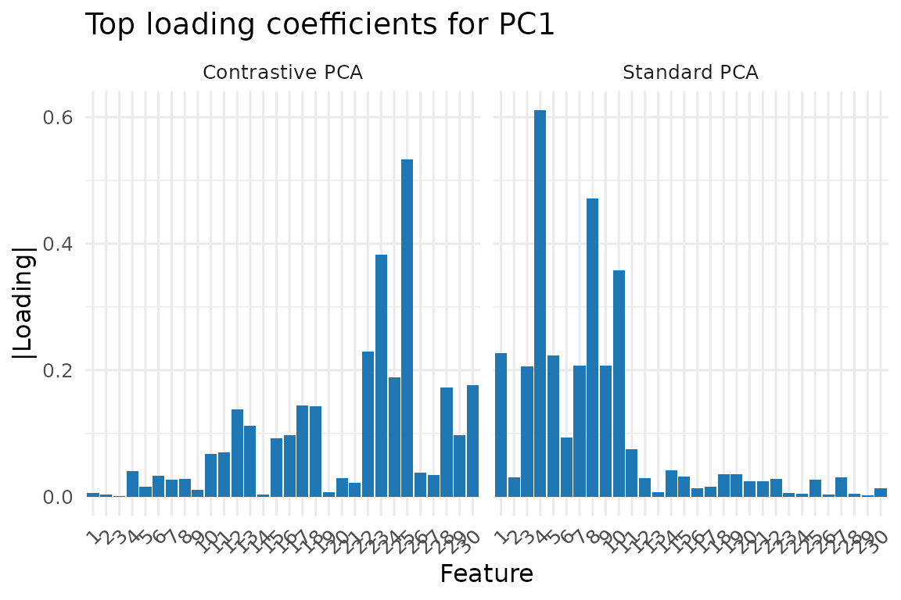

Contrastive PCA: Finding What's Different Between Groups
CPCAplus.RmdWhat is Contrastive PCA?
Imagine you’re studying two groups: patients with a disease and healthy controls. Both groups show variation in their measurements, but you’re specifically interested in what makes the patients different. Standard PCA would find the largest sources of variation across all samples, which might be dominated by age, sex, or other factors common to both groups.
Contrastive PCA (cPCA++) finds patterns that are enriched in one group (foreground) compared to another (background).
A Simple Example
Let’s start with a practical example to see why contrastive PCA is useful:
set.seed(123)
n_samples <- 100
n_features <- 50
# Create background data (e.g., healthy controls)
# Main variation is in features 1-10
background <- matrix(rnorm(n_samples * n_features), n_samples, n_features)
background[, 1:10] <- background[, 1:10] * 3 # Strong common variation
# Create foreground data (e.g., patients)
# Has the same common variation PLUS disease-specific signal in features 20-25
foreground <- background[1:60, ] # Start with same structure
foreground[, 20:25] <- foreground[, 20:25] + matrix(rnorm(60 * 6, sd = 2), 60, 6)
# Standard PCA on combined data
all_data <- rbind(background, foreground)
regular_pca <- pca(all_data, ncomp = 2)
# Contrastive PCA
cpca_result <- cPCAplus(X_f = foreground, X_b = background, ncomp = 2)
#> Using feature-space strategy...
# Compare what each method finds
loadings_df <- rbind(
data.frame(
feature = factor(1:30),
value = abs(regular_pca$v[1:30, 1]),
method = "Standard PCA"
),
data.frame(
feature = factor(1:30),
value = abs(cpca_result$v[1:30, 1]),
method = "Contrastive PCA"
)
)
ggplot(loadings_df, aes(x = feature, y = value)) +
geom_col(fill = "#1f78b4") +
facet_wrap(~method, nrow = 1) +
theme_minimal(base_size = 12) +
theme(axis.text.x = element_text(angle = 45, hjust = 1)) +
labs(
x = "Feature",
y = "|Loading|",
title = "Top loading coefficients for PC1"
)
Notice how standard PCA focuses on features 1-10 (the common variation), while contrastive PCA correctly identifies features 20-25 (the group-specific signal).
Using cPCAplus()
The cPCAplus() function makes contrastive PCA easy to
use:
# Basic usage
cpca_fit <- cPCAplus(
X_f = foreground, # Your group of interest (foreground)
X_b = background, # Your reference group (background)
ncomp = 5 # Number of components to extract
)
#> Using feature-space strategy...
# The result is a bi_projector object with familiar methods
print(cpca_fit)
#> A bi_projector object with the following properties:
#>
#> Dimensions of the weights (v) matrix:
#> Rows: 50 Columns: 5
#>
#> Dimensions of the scores (s) matrix:
#> Rows: 60 Columns: 5
#>
#> Length of the standard deviations (sdev) vector:
#> Length: 5
#>
#> Preprocessing information:
#> A finalized pre-processing pipeline:
#> Step 1 : center
# Project new data
new_samples <- matrix(rnorm(10 * n_features), 10, n_features)
new_scores <- project(cpca_fit, new_samples)
# Reconstruct using top components
reconstructed <- reconstruct(cpca_fit, comp = 1:2)Understanding the Output
cPCAplus() returns a bi_projector object
containing:
-
v: Loadings (feature weights) for each component -
s: Scores (sample projections) for the foreground data -
sdev: Standard deviations explaining the “contrastive variance” -
values: The eigenvalue ratios (foreground variance / background variance)
# Which features contribute most to the first contrastive component?
top_features <- order(abs(cpca_fit$v[, 1]), decreasing = TRUE)[1:10]
print(paste("Top contributing features:", paste(top_features, collapse = ", ")))
#> [1] "Top contributing features: 25, 23, 42, 32, 22, 24, 50, 30, 28, 33"
# How much more variable is each component in foreground vs background?
print(paste("Variance ratios:", paste(round(cpca_fit$values[1:3], 2), collapse = ", ")))
#> [1] "Variance ratios: 16.74, 13.31, 10.31"Common Applications
1. Biomedical Studies
# Identify disease-specific patterns
tumor_cpca <- cPCAplus(
X_f = tumor_samples,
X_b = healthy_tissue,
ncomp = 10
)2. Technical Variation Removal
# Use technical replicates as background to find biological signal
bio_cpca <- cPCAplus(
X_f = biological_samples,
X_b = technical_replicates,
ncomp = 5
)3. Time-Based Contrasts
# Find patterns specific to treatment timepoint
treatment_cpca <- cPCAplus(
X_f = after_treatment,
X_b = before_treatment,
ncomp = 5
)Advanced Options
Handling High-Dimensional Data
When you have more features than samples (p >> n), use the efficient sample-space strategy:
# Create high-dimensional example
n_f <- 50; n_b <- 80; p <- 1000
X_background_hd <- matrix(rnorm(n_b * p), n_b, p)
X_foreground_hd <- X_background_hd[1:n_f, ] +
matrix(c(rnorm(n_f * 20, sd = 2), rep(0, n_f * (p-20))), n_f, p)
# Use sample-space strategy for efficiency
cpca_hd <- cPCAplus(X_f = X_foreground_hd, X_b = X_background_hd,
ncomp = 5, strategy = "sample")
#> Using sample-space strategy...
#> Warning in irlba::irlba(X_b_centered, nv = r_target, nu = 0): You're computing
#> too large a percentage of total singular values, use a standard svd instead.Regularization for Unstable Background
If your background covariance is nearly singular, add regularization:
# Small background sample size can lead to instability
small_background <- matrix(rnorm(20 * 100), 20, 100)
small_foreground <- matrix(rnorm(30 * 100), 30, 100)
# Add regularization
cpca_regularized <- cPCAplus(
X_f = small_foreground,
X_b = small_background,
ncomp = 5,
lambda = 0.1 # Regularization parameter for background covariance
)
#> Using feature-space strategy...When to Use Contrastive PCA
✓ Use contrastive PCA when: - You have two groups and want to find patterns specific to one - Background variation obscures your signal of interest - You want to remove technical/batch effects captured by control samples
✗ Don’t use contrastive PCA when: - You only have one group (use standard PCA) - Groups differ mainly in mean levels (use t-tests or LDA) - The interesting variation is non-linear (consider kernel methods)
Technical Details
Click for mathematical details
Contrastive PCA++ solves the generalized eigenvalue problem:
where: - is the foreground covariance matrix - is the background covariance matrix - represents the variance ratio (foreground/background) - are the contrastive directions
This finds directions that maximize the ratio of foreground to background variance, effectively highlighting patterns enriched in the foreground group.
The geneig() function provides the underlying solver
with multiple algorithm options: - "geigen": General
purpose, handles non-symmetric matrices - "robust": Fast
for well-conditioned problems - "primme": Efficient for
very large sparse matrices
See Also
-
pca()for standard principal component analysis -
discriminant_projector()for supervised dimensionality reduction -
geneig()for solving generalized eigenvalue problems directly